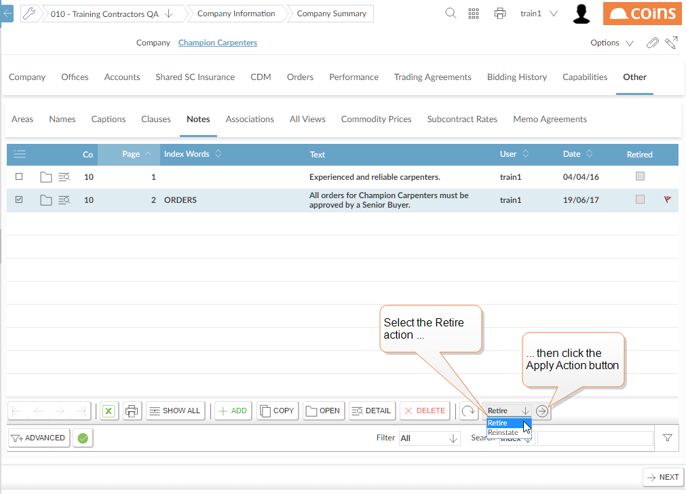
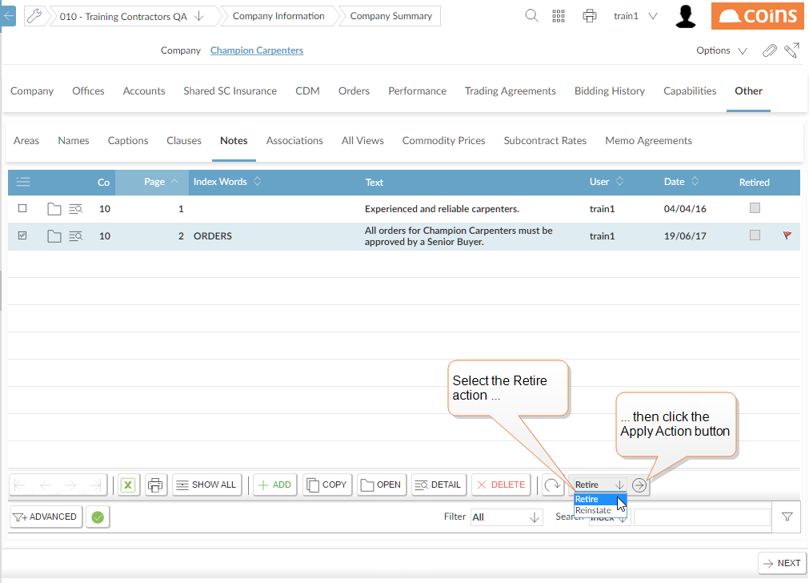
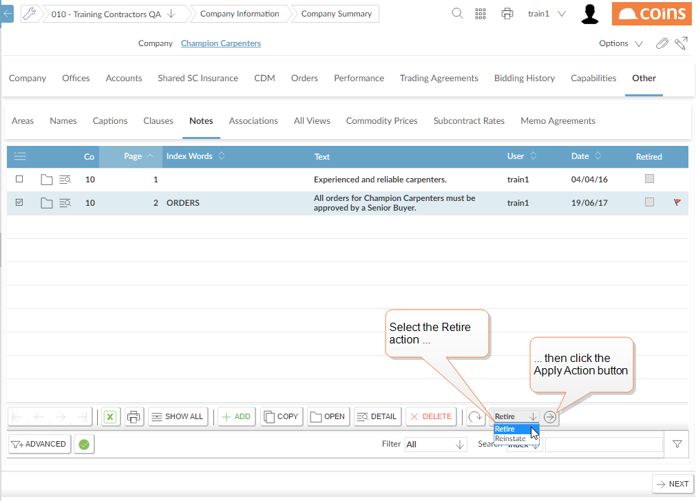

To retire a note:
-
- Select the "Retire" action, then click
 [Apply Action].

[Apply Action].
 - To reinstate a note, use the "Reinstate" action.
You can retire notes. This enables you to keep a history of notes, but retire ones that are no longer relevant.
[Apply Action].
